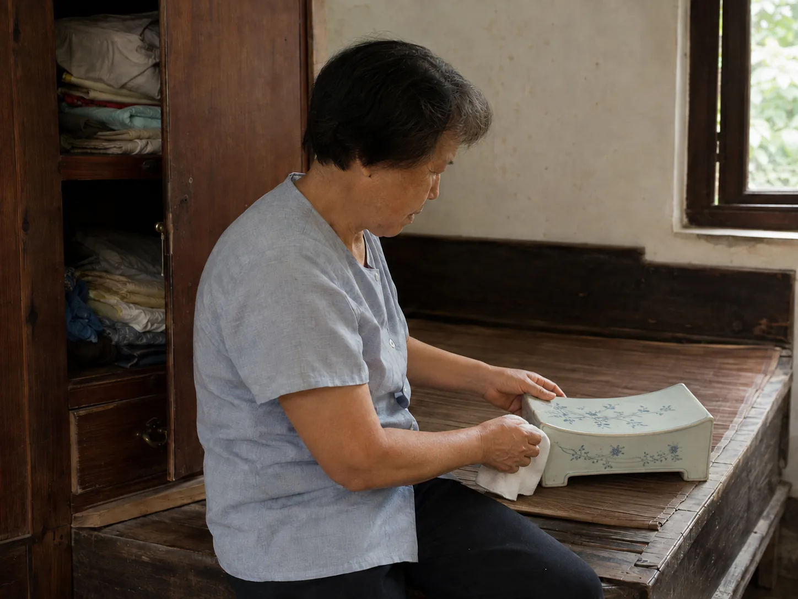

The Porcelain Pillow on a Summer Bed
My grandaunt opened an old bedroom cabinet, wiped a blue-and-white porcelain pillow, and set its hard glazed curve beside the summer bedding.

Blue glaze on the bed
My grandaunt opened the lower half of a bedroom cabinet and lifted out an object wrapped in two faded towels. When the cloth fell away, I saw a blue-and-white porcelain pillow, heavier than its size suggested and cooler than the fabric around it. She rested it on the wooden bed and turned the painted flower branch toward the window.
The pillow had belonged to her mother and had remained in the same room after softer bedding replaced it. Its hollow body sounded faintly when her knuckle touched one side. A thumb-sized vent opened near one end, dark inside and worn smooth around the rim. The upper surface dipped in the middle, with both ends rising like the edges of a shallow bridge.
A harder kind of coolness
She wiped the glaze with a damp cotton cloth, working around a chipped corner where the pale ceramic showed beneath the color. I placed my palm on the curve after she finished. The surface felt cool at first contact, but it did not yield or shift under my hand. The damp streak disappeared quickly wherever the window light reached it.
A cassia-seed pillow changed shape with every movement, while the bamboo sleeping mat spread its woven surface beneath the whole body. This porcelain pillow offered one fixed curve, a small hard place at the head of the same summer bed.
Cloth beneath the raised edge
My grandaunt did not lay her head directly against the painted glaze. She folded a thin white cloth into a narrow band and tested it across the hollowed top. One end slipped, so she lifted the pillow and tucked the cloth beneath its heavier base.
The cabinet door remained open while she adjusted the bamboo mat around it. She drew the white cloth into a narrow band across the hollowed top, then pressed its last folded corner flat with two fingers.